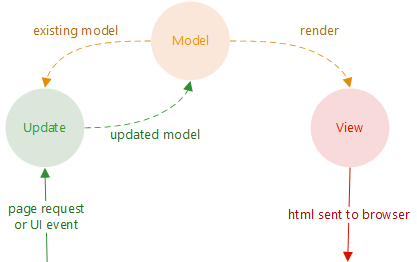

React is a free and open-source front-end JavaScript library for building user interfaces based on UI components. by wiki
Femto is CLI tool that manages the npm packages used by Fable bindings. It installs them using the npm package manager that you are using whether that is npm (default)
Fable.Elmish.React (nuget)
|
| -- Fable.Elmish (nuget)
| -- Fable.React (nuget)
|
| -- react@16.8.0 (npm)
| -- react-dom@16.8.0 (npm)
A fresh retake of the base React DSL to build React applications, optimized for happiness.
Here is how it looks like:
module App
open Feliz
[<ReactComponent>]
let Counter() =
let (count, setCount) = React.useState(0)
Html.div [
Html.button [
prop.style [ style.marginRight 5 ]
prop.onClick (fun _ -> setCount(count + 1))
prop.text "Increment"
]
Html.button [
prop.style [ style.marginLeft 5 ]
prop.onClick (fun _ -> setCount(count - 1))
prop.text "Decrement"
]
Html.h1 count
]
open Browser.Dom
ReactDOM.render(Counter(), document.getElementById "root")

let update (msg: Msg) (model: Model) : Model * Cmd<Msg> =
match msg with
| GotTodos todos -> { model with Todos = todos }, Cmd.none
| SetInput value -> { model with Input = value }, Cmd.none
| AddTodo ->
let todo = Todo.create model.Input
let cmd =
Cmd.OfAsync.perform todosApi.addTodo todo AddedTodo
{ model with Input = "" }, cmd
| AddedTodo todo ->
{ model with
Todos = model.Todos @ [ todo ] },
Cmd.none
div []
[ button [ OnClick (fun _ -> dispatch Increment) ] [ str "+" ]
div [] [ str (string model) ]
button [ OnClick (fun _ -> dispatch Decrement) ] [ str "-" ] ]
Html.div [
prop.className "columns"
prop.children [
Html.div [
prop.className "column is-2"
prop.children [
Html.button.a [
prop.className "button"
prop.text "Click me"
]
]
]
]
]
open Feliz.Bulma
Bulma.columns [
Bulma.column [
column.is2 // <-- note context helper here
prop.children [
Bulma.button.button "Click me"
]
]
]
My journey with Feliz | A comparison between Fable.React and Feliz #155